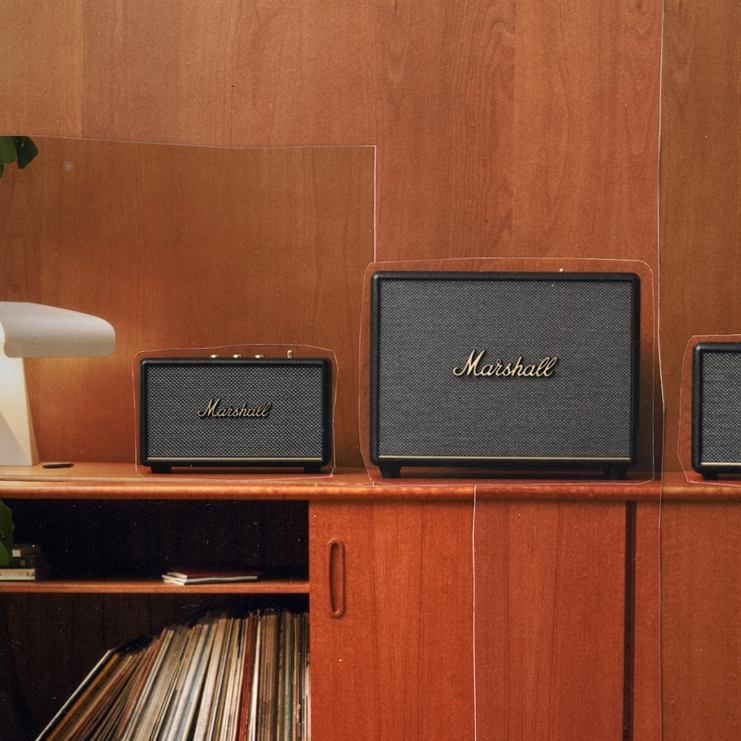
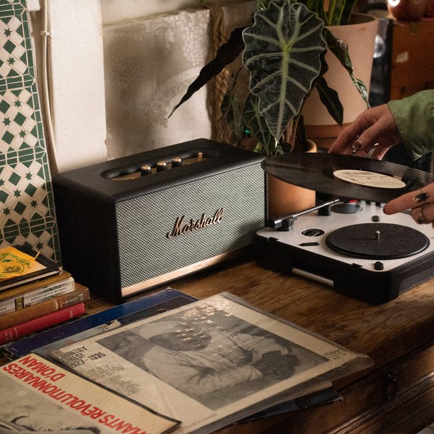

Live Loud, Play True
1962년 창립 이래로, Marshall은 다양한 음악 장르에서 중요한 역할을 해왔으며, 여러 세대에 걸쳐 획기적인 음악을 형성하는 데 크게 기여해왔습니다. 무대, 스튜디오, 가정에서나 이동 중에도 누릴 수 있도록 10년마다 기술을 발전시키며 최고의 오디오라는 명성을 지켜왔습니다.
더 알아보기Products
Headphones
Sound that Moves with youMarshall 헤드폰은 맞춤 튜닝된 다이내믹 드라이버가 탑재되어 우렁찬 저음, 부드러운 중음, 화려한 고음을 전달합니다. Marshall만의 고품질 시그니처 사운드를 지금 바로 경험해 보세요.
더 알아보기
Speakers
Room-filling PresenceMarshall의 스피커는 공간을 채우는 풍부한 사운드와 클래식한 디자인의 결합입니다. 홈 스테레오부터 포터블 블루투스 스피커까지, 어떤 환경에서도 진정한 Marshall 사운드를 선사합니다.
더 알아보기
Amplifiers
Amplify your sound1962년부터 이어져 온 Marshall 앰프의 전통. 스튜디오부터 무대까지, 수많은 전설적 뮤지션들이 선택한 사운드를 당신의 손끝에서 느껴보세요. 시그니처 톤과 뛰어난 내구성으로 여전히 업계 표준을 정의합니다.
더 알아보기
경계를 넘어 울려 퍼지는
새로운 사운드
장르의 틀을 깨고, 감각을 흔드는 음악. 이들은 단지 노래를 만드는 것이 아니라, 시대를 울리는 사운드를 설계합니다. 자신만의 언어로 세상과 연결되는 아티스트들의 음악을 들어보세요.
혁신의 소리를 만나다
독특한 재능과 역동적인 사운드로 자신의 흔적을 남기고 새로운 음악적 방향성을 제시하며, Marshall의 사운드를 만들어 온 전설적인 아티스트들의 유산을 살펴보세요.
새로운 시대의 Artist들
신예부터 거장까지, 다양한 음악적 색깔을 지닌 소속 아티스트들을 소개합니다. 장르의 경계를 허물고 새로운 시도를 주저하지 않으며, 자신만의 독창적인 창의성과 역동적인 사운드로 전 세계적으로 영향력을 넓혀 가고 있습니다. 레이블을 혁신적 음악의 중심지로 만든 그들의 열정과 예술성, 그리고 개성을 지금 만나보세요.
Marshall 위를
달리는 창조자들
소리 위를 질주하는 아티스트들, 그들의 무대는 경계가 없습니다. Marshall의 진동 위에서 태어난 음악은, 각각 자신만의 세계입니다. 이들은 틀을 따르지 않으며, 새로운 소리를 창조하고, 시대를 다시 씁니다.
Social
음악 산업을 이루는 뿌리 깊은 유산과 공동체 그리고 뮤지션들과 관련된 최신 이야기들을 탐험해보세요.

HERITAGE
60년이 넘는 역사를 자랑하는 만큼 Marshall에게는 많은 이야기들이 숨겨져 있습니다. 1962년으로 거슬러 올라가 Marshall로부터 직접 들어보세요.
더 알아보기STORY
음악과 관련된 모든 이야기들이 담겨 있는 시리즈를 만나보세요. 여기서만 공개되는 뮤지션의 투어 생활을 들여다보거나, 가장 좋아하는 아티스트들의 연주 스타일을 배울 수 있는 내용까지 여러분을 초대합니다.
더 알아보기
COMMUNITY
Jim Marshall은 음악이 변화시키는 힘을 가지고 있다고 믿었고, 모두에게 기회가 주어져야 한다는 철학을 남겼습니다. 그것이 오늘날까지 계속해서 신인들을 지원하고 음악 커뮤니티의 포용성을 높이기 위해 힘쓰고 있는 이유입니다.
더 알아보기PARTNERSHIP
경계를 허물고 혁신을 일으키는 것이 바로 음악이기에, 다양한 크리에이티브와 지속적인 파트너십 및 콜라보레이션을 활발하게 진행하고 있습니다.
더 알아보기